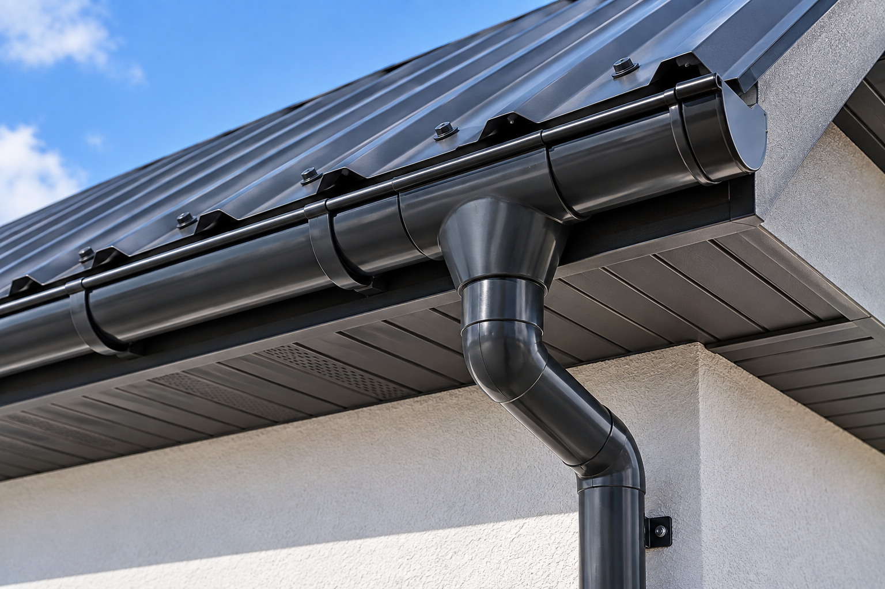

Желоба
Идут вдоль карниза и принимают воду со ската. Монтаж — 770 ₽/м.п. Уклон и крепление подбираю по этой крыше, готовый шаг кронштейнов на странице не публикую.
Ставлю желоба и трубы, чтобы вода с карниза уходила вниз, а не по стене. В прайсе это две строки: желоба — 770 ₽/м.п., трубы — 720 ₽/м.п. «От 720» — цена труб, не всей системы сразу. Работаю лично в Архангельске, Северодвинске и Новодвинске. Материалы в цену работ не входят.
от 720 ₽/м.п.
Позвонить: +7 921 484-08-74
Водосток забирает воду с кромки кровли. Калькулятор укладки покрытия эту работу не считает.
Идут вдоль карниза и принимают воду со ската. Монтаж — 770 ₽/м.п. Уклон и крепление подбираю по этой крыше, готовый шаг кронштейнов на странице не публикую.
Спускают воду вниз, от стены. Монтаж — 720 ₽/м.п. Число стояков зависит от длины карниза и углов дома.
Желоб держится на карнизном узле. Если свес ещё не собран, сначала смотрю, к чему его крепить. Подшивка свеса — отдельная работа, страница свесов.
Трубу вывожу так, чтобы вода не лилась под стену. Дальше — на отмостку или в уже существующий приёмник. Отдельной цены на ливневую канализацию в прайсе нет.
Желоба и трубы не складываются в одну «систему за 720». Каждая строка считается по своим метрам. Материалы желобов и труб — отдельно.
Капельник, который выводит воду с кровли в желоб, — другая строка прайса, 300 ₽/м.п. Демонтаж старого водостока отдельной ценой не выделен: если его нужно снять, объём согласую до работ. Полный список — в прайсе. Зачем система нужна на частном и дачном доме — в заметке про водосток.
По фото карниза посчитаю ориентир по желобам и трубам. Калькулятор кровельного покрытия водосток не считает. Это не итоговая смета.
Вода должна попасть с покрытия в желоб. Для этого карниз собирают из нескольких разных работ.
Нижний край металлочерепицы или профнастила вывожу так, чтобы вода сходила в желоб, а не за него.
Планка, которая направляет воду в жёлоб. В прайсе — 300 ₽/м.п. В цену желоба она не входит.
Закрывает карниз снизу и не заменяет водосток. Каркас, панели и доска — на странице подшивки свесов.
Систему можно поставить отдельно, без замены кровли. Если течёт сам скат, это уже ремонт крыши, а не желоб.
Реальные кровельные работы, выполненные мной.
Нужен снимок кромки крыши и места, куда сейчас стекает вода.
По фото оцениваю длину желобов и число труб. Если карниз не виден целиком, смотрю на объекте.
До работ отдельно согласую желоба и трубы. Капельник и подшивку добавляю, только если они нужны.
Ставлю систему и проверяю, что вода уходит в желоб. На выполненные работы — гарантия 1 год.
Желоба — 770 ₽/м.п., трубы — 720 ₽/м.п. Это разные строки. Материалы в них не входят.
Да, если карниз уже держит крепление. Если вода идёт сквозь покрытие, желоб эту течь не закроет — тогда смотрю ремонт крыши.
Нет. Капельник — 300 ₽/м.п. Подшивка свеса тоже считается отдельно.
От стены вниз. Если на участке уже есть приёмник, вывожу трубу к нему. Новой ливневой канализации в прайсе нет, её на странице не обещаю.
Да. Работаю в Архангельске, Северодвинске и Новодвинске.
По снимку отделю метры желоба от метров трубы. Диаметр системы по одной фотографии не назначаю.